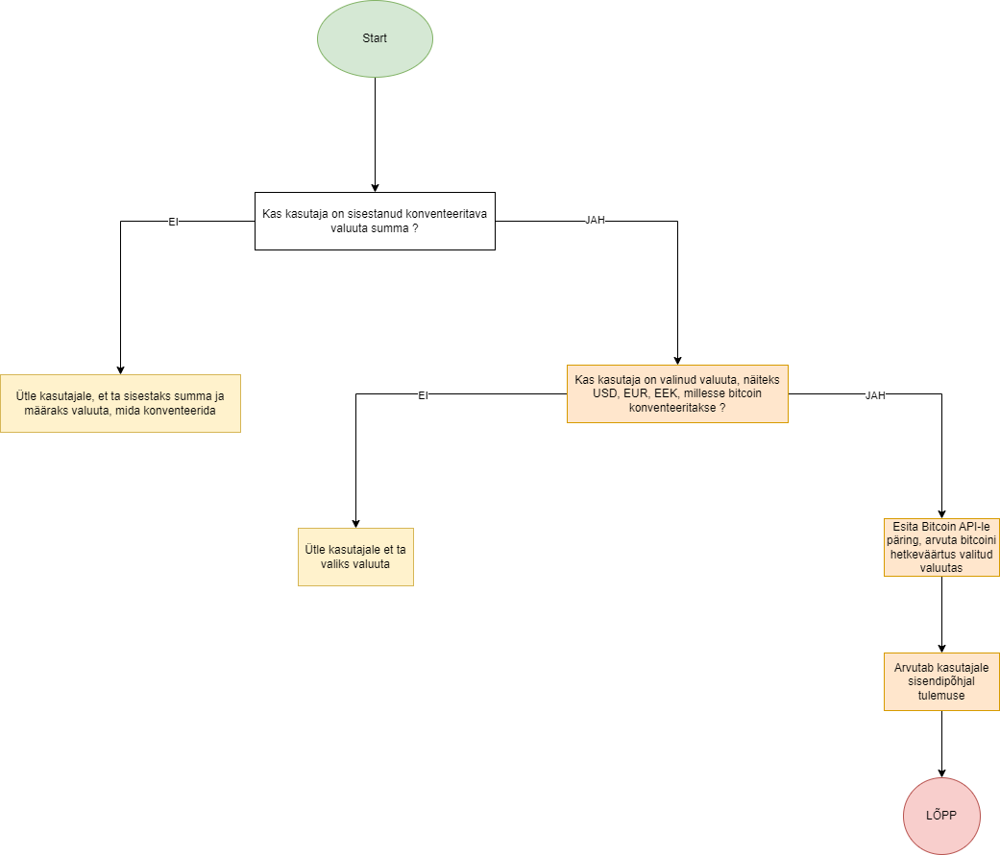

Mis on Bitcoin?
Bitcoin on digitaalne valuuta, mis loodi 2009. aastal tundmatu isiku või rühma poolt. See on detsentraliseeritud süsteem, mis põhineb plokiahela tehnoloogial.
Bitcoin Kalkulaatori Kirjeldus
Kalkulaatori funktsioonid
- Bitcoini väärtuse arvutamine erinevates valuutades (EUR, USD, GBP, EEK).
- Reaalajas andmete hankimine Coindesk API kaudu.
- Tulemuste kuvamine valitud valuuta tähisega (nt "500 EUR").
Tehniline Kirjeldus
Kalkulaator kasutab Coindesk API-d, et hankida reaalajas valuutakursid. Kursi teisendused tehakse järgmiste valemite alusel:
- EUR: Bitcoini kogus korrutatakse EUR kursiga.
- USD: Bitcoini kogus korrutatakse USD kursiga.
- GBP: Bitcoini väärtus teisendatakse USD kaudu GBP-ks.
- EEK: Bitcoini väärtus teisendatakse EUR kaudu EEK-ks (1 EUR = 15.6466 EEK).
Lisaks toetab kalkulaator kasutajasõbralikku liidest, mis võimaldab kiiresti arvutusi teha ja tulemusi vaadata.
Flowchart

Ülalolev flowchart kirjeldab Bitcoini kalkulaatori töövoogu alates andmete sisestamisest kuni arvutuste ja tulemuste kuvamiseni.